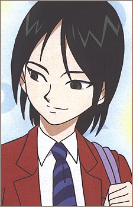

Reiko Kiuchi is a Japanese voice actress. She is affiliated with Ken Production. She is voiced Kiriya from Pretty Cure, and Beet from Beet the Vandel Buster.
- Gender: Female
- Birthday: July 10, 1968
- Hometown: Tokyo, Japan

|
|---|
|
Reiko Kiuchi is a Japanese voice actress. She is affiliated with Ken Production. She is voiced Kiriya from Pretty Cure, and Beet from Beet the Vandel Buster.
|
|---|
|  | Kiriya | Pretty Cure | Kiriya is one of the villians from the Dark Zone. He is talented at soccer. He does not understand normal human emotions. |
Go Back to Main Page |
Go Back to Homepage |
|
|
|
OR |
|